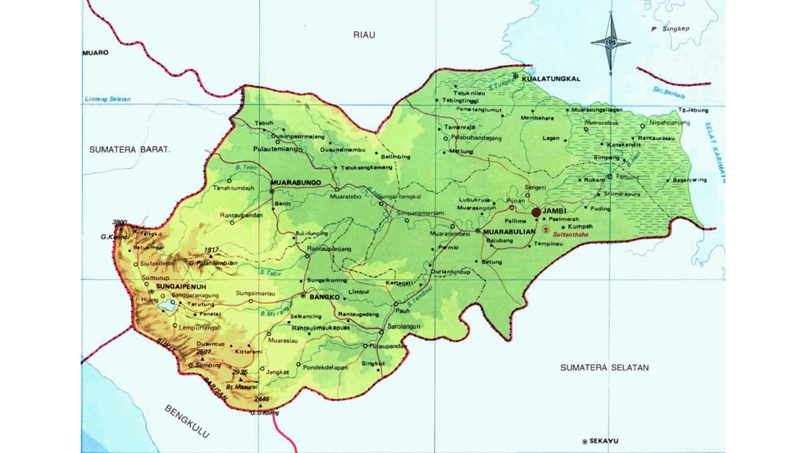
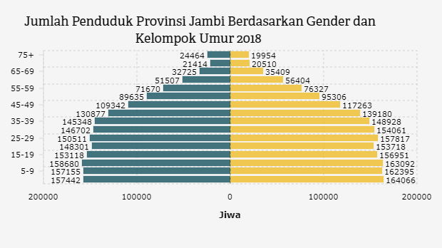

Sejarah
Klik Gambar Untuk Perbesar
Kota Jambi berdiri pada tanggal 28 Mei 1401 dan dibentuk sebagai pemerintah
daerah otonom kotamadya berdasarkan ketetapan Gubernur Sumatera nomor
103/1946, tanggal 17 Mei 1946. Kemudian ditingkatkan menjadi kota besar
berdasarkan Undang-undang nomor 9 tahun 1956 tentang pembentukan daerah
otonom kota besar dalam lingkungan daerah provinsi Sumatera Tengah.
Kemudian kota Jambi resmi menjadi ibukota provinsi Jambi pada tanggal 6
Januari 1957 berdasarkan Undang-undang nomor 61 tahun 1958.
Geografi

Klik Gambar Untuk Perbesar
Berdasarkan Undang-undang nomor 6 tahun 1986, luas wilayah administratif
pemerintah kota Jambi adalah ± 205.38 km², secara geomorfologis kota ini
terletak di bagian barat cekungan Sumatera bagian selatan yang disebut
sub-cekungan Jambi, yang merupakan dataran rendah di Sumatera bagian timur.
Dari topografinya, kota Jambi relatif datar dengan ketinggian 0–60 m di atas
permukaan laut. Bagian bergelombang terdapat di utara dan selatan kota, sedangkan
daerah rawa terdapat di sekitar aliran Batanghari, yang merupakan sungai terpanjang
di pulau Sumatera dengan panjang keseluruhan lebih kurang 1.700 km (11 km yang berada
di wilayah kota Jambi dengan lebar sungai ± 500 m), sungai ini berhulu pada Danau Di
atas di provinsi Sumatera Barat dan bermuara di pesisir timur Sumatera pada kawasan
selat Berhala. Kota Jambi beriklim tropis dengan suhu rata–rata minimum berkisar
antara 22,1-23,3 °C dan suhu maksimum antara 30,8-32,6 °C, dengan kelembaban udara
berkisar antara 82-87%. Sementara curah hujan terjadi sepanjang tahun sebesar 2.296,1
mm/tahun (rata-rata 191,34 mm/bulan) dengan musim penghujan terjadi antara Oktober-Maret
dengan rata-rata 20 hari hujan/bulan, sedangkan musim kemarau terjadi antara April-September
dengan rata-rata 16 hari hujan/bulan.
Demografi

Klik Gambar Untuk Perbesar
Kota Jambi merupakan kota dengan jumlah penduduk paling
banyak di provinsi Jambi, sekitar 17% dari
keseluruhan populasi penduduk provinsi Jambi.


)